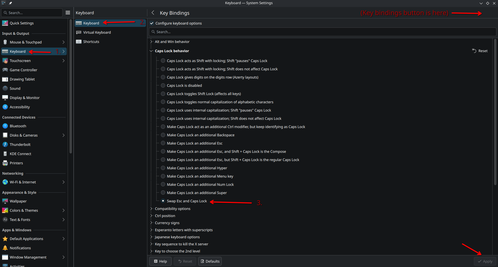

Table of Contents
1. Emacs Pinky:
Because keyboards are designed around typing and not around our editors, odd issues like this can happen: CTRL in normal computing isn’t used quite as often as it is when running emacs. As a result, repeated overextension of the pinkey finger can cause gnarly issues to arise with your hands. This little guide hopes to help anyone interested in Emacs to avoid months-long recovery of your hands (particularly the little finger)…
—
Unfortunately, remapping keys in Linux is a bit of a chore and how to go about it “depends” on what flavor of Linux you like.
1.1. Arch
1.2. Debian/Ubuntu
#/etc/default/keyboard # NOTE: Comment out rather than replace, in case you want to go back... # To swap Caps with ctrl: XKBOPTIONS="ctrl:swapcaps" # to change JUST CAPSLOCK (leaving ctrl) XKBOPTIONS="ctrl:nocaps" # Apply the configuration (run in shell) #sudo dpkg-reconfigure keyboard-configuration
1.3. KDE and More generally
Often, built-in GUI settings has keyboard options which usually allow you to change these settings.

By the way, this is how I like to display images in Org mode. I find it exports nicely to HTML this way, and have html-style controls (align, width, etc) right there in the header…
Emacs can actually view images, so it’s almost as easy to go, find the image, open&view it, and save the link to it and paste here:
- Find/view the file
<SPC> .- Save the location
<SPC> f y- Change to previous buffer
<SPC> b p- Yank the URL (from normal mode)
p- (Optionally) convert to relative path…
C-l- Add captions, formatting, etc?
2. Personal Recommendation:
I highly recommend remapping both ESC and CAPSLOCK if you’re using Doom (evil) mode. Train your other hand to use CTRL with some other finger?